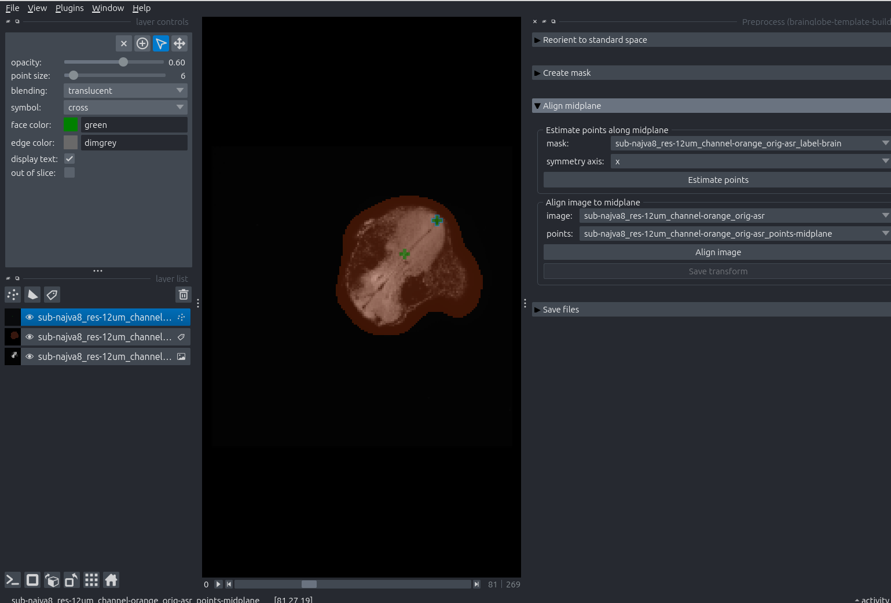

Aligning samples for template building#
Caution
This tutorial uses brainglobe-template-builder which is still in early development. This means features are missing and things may change a lot. Use at your own risk!
To avoid biasing results towards distinctive individual features of an individual brain, it is possible to use the average of many brains. To compute this average, it is highly beneficial to roughly pre-align individual brain images. This makes the averaging a lot faster and more reliable.
The brainglobe-template-builder tool provides a Graphical User Interface to pre-align sample images to be used for template building later. It’s an early work-in-progress tool, so you will have to install it from
Github via the command pip install git+https://github.com/brainglobe/brainglobe-template-builder. We recommend doing this in a separate conda environment.
This manual work needs to be done only once per sample, on a low-resolution image. We recommend downsampling images for template building to images < 100MB for preprocessing and initial template building. The results can be automatically reused later to create higher-resolution atlases.
Open
napari.Open the
Preprocesswidget by selectingPlugins > Preprocess (brainglobe-template-builder)in the menu bar near the top left of the window.
The Preprocess widget appears on the right hand side of the window, listing four steps
Open the lowest resolution version of your sample - either drag and drop it onto the
naparicanvas, or doFile > Open. We use a tadpole brain downsampled to 12um isotropic resolution here - and we take note that the orientation of this sample is “PLS” (axis 0 is Posterior-anterior, axis 1 is Left-right and axis 2 is Superior-inferior) in BrainGlobe convention.
Determining sample orientation
When opening a three dimensional image in napari and hovering over it with your mouse, you will see the coordinates along each axis just below the dimension slider.
The tadpole brain in napari near the pixel (0,0,0) showing the coordinates of the cursor below the canvas.
You can now move along each image axis and determine which anatomical axes this approximately corresponds to.
In our case, moving upwards along the dimension slider (axis 0) goes from posterior to anterior, so the first letter of orientation is P.
If we move the mouse from top to bottom in the image (axis 1) we go from anatomical left to right (approximately, because the anatomical axes are obliquely tilted relative to the image axes!), so the second letter is L.
If we go from left to right in the image (axis 2), we go (again approximately) from superior to inferior, so the third letter is S.
 The tadpole brain is opened in napari.
The tadpole brain is opened in napari.
Set the source origin to the orientation of your sample, in BrainGlobe convention (PLS for our example tadpole). Double-check the target origin is ASR. Then press the “Reorient selected layers” button.
The tadpole brain is now re-oriented. Note that the orientation may not be perfect (it isn’t in the example case) because this step only includes reorientation in multiples of 90 degrees, and the image is tilted with respect to its anatomical axes.
Expand the next step: “Create Mask”, and click the “Create Mask” button. Explore the mask in 3D by toggling the 2D/3D icon (little square/cube) on the lower left.

The mask is a Labels layer that should distinguish brain from non-brain as best possible. Err on the side of the mask being larger than the brain; a bit of margin is absolutely fine. You can play with the parameters in this step to improve the mask. Delete and recreate the mask layer to do so.
Manually remove any regions that should not be included in the brain from the mask. This could be damaged areas or non-brain tissues that are visible in the image. You can do this by selecting the mask layer from the layer list (it will be highlighted in blue) and then using the eraser and paint brush icons from the layer controls in the top left. See this introductory tutorial for more details around how to erase and paint in a Labels layers.
Note
The n edit dim parameter allows you to switch between editing the mask in 2 and 3 dimensions.

In our case, we have manually removed the tadpole’s spinal cord from the mask.
Switch back to a 2D view and expand the next step: “Align midplane”. Click “Estimate points”.
A new Points layer appears in the layer list, containing 9 points arranged in a 3x3 grid across planes in the sample.
Move the points so they lie along the sagittal midplane of your sample. You can do so by selecting the points layer (click on it, and it will be highlighted in blue) and using the layer controls on the top left.

An example of two points moved to the tadpoles sagittal midplane.
Click “Align image”.

Napari will add three new layers: the aligned sample, the aligned mask, and a labels layer dividing the aligned brain into two hemispheres.
If you are happy with the result, we strongly recommend you click “Save transform” so you can reproduce this in the future. It is a good idea to save it (and other outputs from this tutorial) in an output folder named after the sample: in our case the sample is called
najva8, so we name the output foldersub-najva8. If you would like to improve the alignment, delete the three aligned images and repeat steps 7-9.Expand the next step: “Save files”
Input the voxel size of the sample in millimeters, and browse to the output folder.
Select the three topmost layers in the layerlist by
Shift+Left Mouseclicking on the first and the third. Click “Save selected layers”.

Napari just before saving the three aligned layers.
Note
Double-check that this has worked by navigating to the output folder - it should contain 6 new image files: 3 .nii.gz and 3 .tif. The names of these files will start with the original sample name and end with one of asr_aligned, asr_label-brain_aligned or asr_label-halves_aligned.